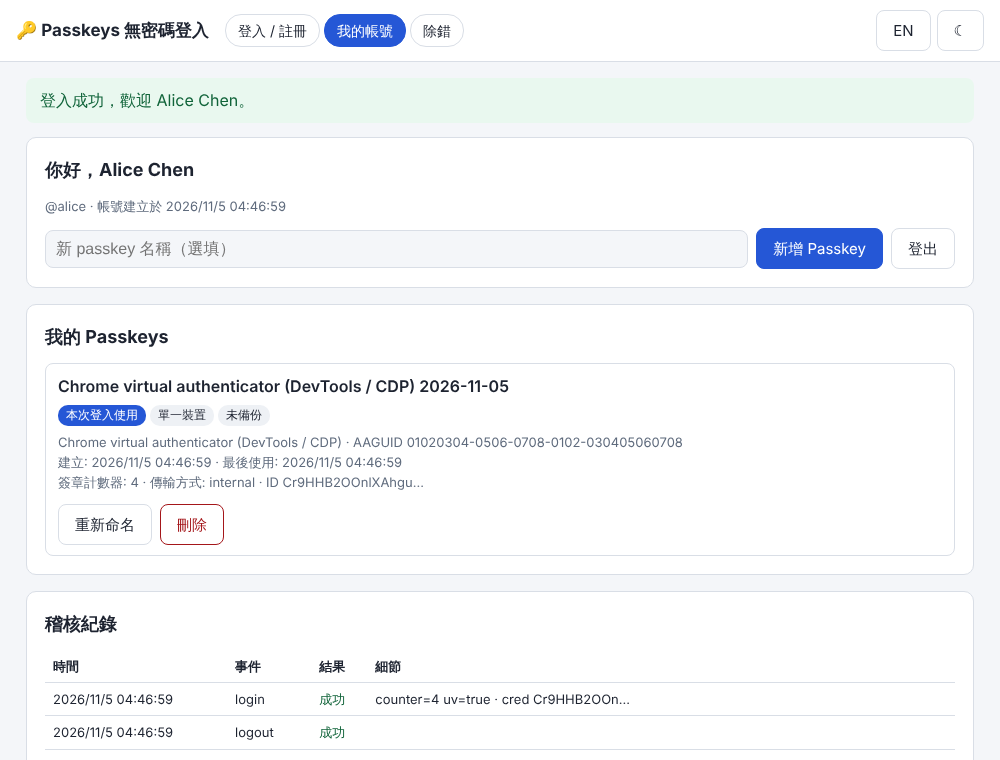
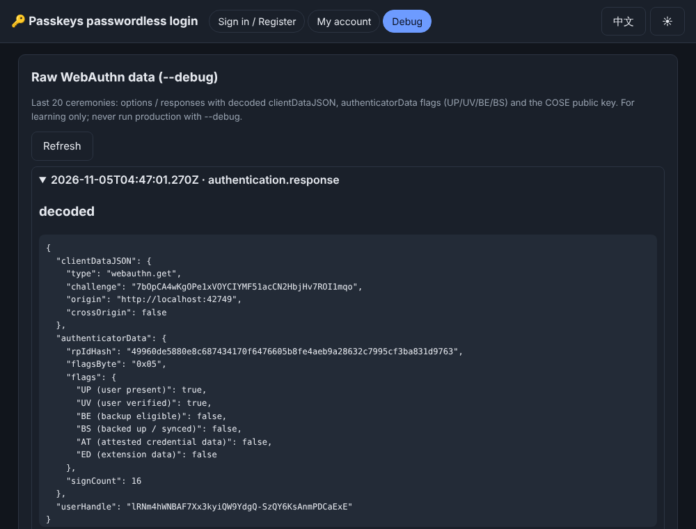
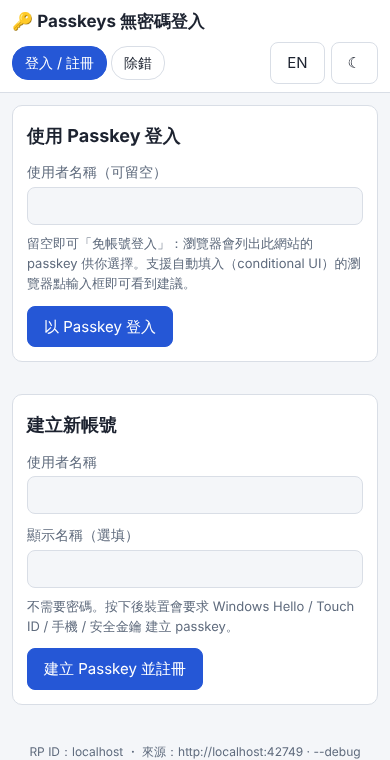

概覽
本專案是一個完整可執行的 Passkeys（WebAuthn / FIDO2）無密碼登入範例：Node 22 伺服器 + SQLite 儲存 + 原生 HTML/JS 前端（以 esbuild 在本機打包 @simplewebauthn/browser，執行時不依賴任何 CDN），並附有使用 Chrome DevTools Protocol「虛擬驗證器」的自動化端對端測試。
功能
- 註冊（attestation
none、要求可探索憑證residentKey: required）與登入。 - 免帳號登入（usernameless，discoverable credential）與自動填入（conditional UI，
autocomplete="username webauthn"）。 - 每位使用者可有多把 passkey：列出、重新命名、刪除（禁止刪除最後一把），顯示 AAGUID / 驗證器名稱、BE/BS 備份旗標、傳輸方式、簽章計數器、最後使用時間。
- 簽章計數器檢查：計數器沒有遞增（且非 0/0）即拒絕，並寫入稽核紀錄。
- 挑戰值（challenge）存在 SQLite，5 分鐘到期、一次性使用，以 HttpOnly + SameSite=Strict 的
pk_flowCookie 綁定瀏覽器。 - 工作階段 Cookie
pk_sid：HttpOnly、SameSite=Lax、https 時自動加 Secure；資料庫只存 token 的 SHA-256。 - 稽核紀錄（註冊、登入成功/失敗、登出、新增/改名/刪除 passkey）與帳號頁檢視。
--debug才開啟的「除錯」頁：原始 options / response、解碼後的 clientDataJSON、authenticatorData 旗標（UP/UV/BE/BS/AT/ED）與 COSE 公鑰。- 介面 zh-TW（預設）/ English 切換、亮/暗色主題、手機寬度（390px）可用；常見錯誤（NotAllowedError、InvalidStateError、SecurityError、來源不符等）都有清楚說明。
版本（package.json 已固定 exact 版本）
| 元件 | 版本 | 用途 |
|---|---|---|
| Node.js | 22.x（Volta 固定 22.23.4） | 執行環境 |
| @simplewebauthn/server | 14.0.3 | 產生 options、驗證 attestation / assertion |
| @simplewebauthn/browser | 14.0.0（devDependency，打包進 public/build/app.js） | 呼叫 navigator.credentials.create/get |
| better-sqlite3 | 13.0.3 | SQLite（node:sqlite 在 Node 22 仍標示為 experimental，會印出警告，因此未採用） |
| esbuild | 0.28.2（devDependency） | 前端打包 |
| Playwright | 使用全域安裝版本（測試時以 require('playwright') 解析） | e2e + CDP 虛擬驗證器 |
資料夾結構
07-passkeys-webauthn/
src/cli.js 進入點（參數解析、啟動、關閉）
src/config.js 設定：CLI 參數 > 環境變數 > 預設；rpID/origin 檢查；OS 感知資料夾
src/server.js node:http 路由、Cookie、CSP、來源檢查、靜態檔
src/passkeys.js WebAuthn 核心（options、驗證、計數器、passkey 管理、除錯解碼）
src/db.js SQLite schema 與 async 存取介面
src/logger.js JSONL 分級日誌
src/aaguid.js 常見 AAGUID → 驗證器名稱（盡力而為）
client/main.js 前端程式（打包到 public/build/app.js）
client/i18n.js zh-TW / en 字典
public/ index.html、app.css、favicon.svg、build/app.js
scripts/build-client.js esbuild 打包
test/unit.test.js 單元測試（含軟體驗證器 test/soft-authenticator.js）
test/e2e.test.js Playwright + CDP 虛擬驗證器端對端測試
examples/*.png e2e 自動產生的截圖
start.bat / start-debug.bat / run-tests.bat → passkeys.ps1 → nodeWebAuthn 流程圖解
Passkey 的核心：私鑰永遠留在驗證器（Windows Hello、iCloud 鑰匙圈、Google 密碼管理工具、手機、安全金鑰），伺服器只保存公鑰。每次登入伺服器給一個隨機挑戰值，驗證器用私鑰簽章，伺服器用公鑰驗證。瀏覽器會把目前網址的 origin 寫進 clientDataJSON，並只允許 rpID 與網域相符的請求，所以釣魚網站拿不到可用的簽章。
1. 註冊（attestation ceremony）
2. 登入（assertion ceremony，含免帳號 / 自動填入）
localhost、example.com），origin 是完整來源（例如 https://login.example.com）。rpID 必須等於 origin 的主機名稱或其上層可註冊網域。passkey 會綁定 rpID，之後更改 rpID 會讓所有既有 passkey 失效。快速開始（Windows / Linux）
Windows
- 安裝 Node 22（建議
volta install node@22）。 - 雙擊
start.bat（第一次會自動npm ci）。視窗會印出資料夾、Node 版本、資料路徑與結束碼。 - 用 Chrome / Edge 開啟
http://localhost:3007（不要用127.0.0.1，因為 rpID 是localhost）。 - 想看原始 WebAuthn 資料：改用
start-debug.bat，再開http://localhost:3007/debug。 - 執行測試：
run-tests.bat（e2e 需要 Playwright 與 Chromium，見下方）。
Windows 預設資料夾：%ProgramData%\NewMiscCode\07-passkeys-webauthn（SQLite：passkeys.sqlite，日誌：logs\app-YYYY-MM-DD.jsonl）。可用 --data-dir / --log-dir 或環境變數 PK_DATA_DIR / PK_LOG_DIR 變更。
REM 命令列（cmd）
start.bat --port 3010 --origin http://localhost:3010
start-debug.bat
REM PowerShell 直接執行
.\passkeys.ps1 --debug
.\passkeys.ps1 -TestLinux / macOS
cd 07-passkeys-webauthn
npm ci
npm start # http://localhost:3007，資料在 ./data
npm run dev # 等同 --debug
node src/cli.js --help # 所有參數
npm test # 先 build 前端，再跑單元 + e2e 測試參數一覽
| 參數 | 環境變數 | 預設 | 說明 |
|---|---|---|---|
--port | PORT | 3007 | HTTP 埠 |
--host | HOST | 127.0.0.1 | 綁定位址（只給本機） |
--rp-id | RP_ID | localhost | WebAuthn RP ID（網域） |
--origin | ORIGIN | http://<rp-id>:<port> | 允許的 origin，可逗號分隔多個 |
--rp-name | RP_NAME | NewMiscCode Passkeys Demo | 顯示在驗證器提示中的名稱 |
--data-dir | PK_DATA_DIR | Windows：%ProgramData%\NewMiscCode\07-passkeys-webauthn；其他：./data | SQLite 位置 |
--log-dir | PK_LOG_DIR | <data-dir>/logs | JSONL 日誌 |
--debug | PK_DEBUG=1 | 關 | debug 日誌等級 + /debug 頁 + /api/debug/ceremonies |
--require-uv | PK_REQUIRE_UV=1 | 關（preferred） | 強制使用者驗證（UV 旗標） |
正式網域設定（真實網域）
node src/cli.js --rp-id example.com --origin https://login.example.com --host 127.0.0.1 --port 3007- 在前面放反向代理（IIS ARR、nginx、Caddy）終結 TLS，轉發到
127.0.0.1:3007，並保留原始Origin標頭。 - 所有 origin 都是 https 時，Cookie 會自動加
Secure。 - rpID 用上層網域（
example.com）時，同網域下的子網域（app.example.com）也能共用 passkey；需要時用逗號列出多個 origin。 - 非 localhost 的 http origin 會被拒絕啟動（瀏覽器只在 https 或 localhost 提供 WebAuthn）。
e2e 測試需求
單元測試只需 npm ci。e2e 需要可被 require('playwright') 解析的 Playwright 與 Chromium，例如：npm i -g playwright@1.63.0 並執行 npx playwright install chromium（並設定 NODE_PATH 指向全域 node_modules），或在本資料夾 npm i --no-save playwright。找不到時 e2e 會顯示 skipped，不會失敗。
使用說明
註冊
- 在「建立新帳號」輸入使用者名稱（3–32 字元，英數字與
. _ @ -）與選填的顯示名稱。 - 按「建立 Passkey 並註冊」，依作業系統提示（Windows Hello PIN / 指紋 / 臉部、手機 QR code、安全金鑰）完成。
- 成功後自動登入並進入「我的帳號」。
登入
- 指定帳號：輸入使用者名稱後按「以 Passkey 登入」，伺服器在
allowCredentials列出該帳號的 passkey。 - 免帳號：使用者名稱留空直接按按鈕，瀏覽器列出此網站所有可探索 passkey。
- 自動填入：支援 conditional UI 的瀏覽器（Chrome 108+、Safari 16+、Edge）點一下使用者名稱欄位就會出現 passkey 建議。加
?autofill=0可停用（測試用）。
管理 passkey（我的帳號）
- 新增 Passkey：可以先填名稱（例如「公司筆電」）。同一個驗證器重複新增會得到 InvalidStateError（伺服器以
excludeCredentials阻止重複）。 - 重新命名 / 刪除：刪除只移除伺服器端紀錄；裝置上的 passkey 仍在，之後用它登入會顯示「伺服器找不到這個 passkey」。不能刪除最後一把。
- 標籤說明：單一裝置 / 多裝置（BE 旗標）、已同步備份（BS 旗標）、本次登入使用。
- 稽核紀錄：最近 30 筆事件，包含失敗原因（錯誤代碼）。
語言與主題
右上角 EN / 中文 切換語言，☾ / ☀ 切換暗色 / 亮色，選擇存在 localStorage。
常見錯誤訊息對照
| 錯誤 | 常見原因 | 畫面提示 / 處理 |
|---|---|---|
| NotAllowedError | 使用者取消、逾時（60 秒）、沒有可用的 passkey、Windows Hello 未設定 | 重試；確認裝置已設定 PIN / 生物辨識 |
| InvalidStateError | 此驗證器已經有這個帳號的 passkey（excludeCredentials） | 改用其他裝置，或直接登入 |
| SecurityError | 網址網域與 rpID 不符，或非 https / localhost | 改用設定的 origin 開啟 |
| ORIGIN_MISMATCH（伺服器） | 以 127.0.0.1 或其他網址開啟；或 clientDataJSON 的 origin 不符 | 畫面上方也會顯示黃色警告；改用設定的 origin 或以 --origin 啟動 |
| CREDENTIAL_NOT_FOUND | passkey 已在帳號頁刪除 | 刪除裝置上的 passkey 或換一把 |
| COUNTER_REGRESSION | 簽章計數器沒有遞增（疑似複製的驗證器） | 拒絕登入並寫入稽核 |
| CHALLENGE_EXPIRED / MISSING | 超過 5 分鐘、已用過、Cookie 被阻擋 | 重試 |
逐步驗證指南
A. 自動化測試（建議先跑）
npm test
node ../tools/audit-text.mjs .pass；audit 顯示 problems=0。e2e 會更新 examples/ 下的 3 張截圖。e2e 以 CDP WebAuthn.enable + WebAuthn.addVirtualAuthenticator（ctap2、internal、hasResidentKey、hasUserVerification、isUserVerified）驗證：
- 預設中文、切換英文再切回（檢查
<html lang>）。 - 註冊 alice → 進入帳號頁，1 把 passkey，AAGUID 為虛擬驗證器的
01020304-0506-0708-0102-030405060708。 - 登出 → 輸入帳號登入 → 計數器遞增。
- 登出 → 免帳號登入 → 計數器遞增。
- 登出 → 只開啟首頁，conditional UI 自動完成登入 → 計數器遞增（截圖
account-zh.png）。 - 同一驗證器再新增 → InvalidStateError 訊息。
- 匯出驗證器 A 的憑證，換成驗證器 B → 新增第二把「Phone B」。
- 刪除 Phone B 成功；刪除最後一把被拒絕（LAST_PASSKEY）。
- 用仍持有已刪除憑證的驗證器 B 免帳號登入 → 「伺服器找不到這個 passkey」，並留在登入頁。
- 把 A 的憑證匯回 → 登入成功、計數器持續遞增；稽核紀錄含失敗登入（CREDENTIAL_NOT_FOUND）與刪除事件。
- 把 A 的 signCount 改回 0 → 登入被拒（COUNTER_REGRESSION）。
- 以
http://127.0.0.1:<port>開啟 → 黃色警告 + 登入顯示來源不符錯誤。 - 英文 + 暗色的除錯頁顯示 UP/UV/BE/BS 旗標與
webauthn.get（截圖debug-en-dark.png）。 - 390px 寬度下帳號頁與登入頁沒有水平捲軸（截圖
login-mobile-390.png）；全程沒有非預期的 console error。



截圖由 e2e 測試以 Chromium + CDP 虛擬驗證器產生（deviceScaleFactor 1）。DevTools 的 WebAuthn 面板使用的正是同一套虛擬驗證器機制。
B. 手動：Chrome DevTools 虛擬驗證器（不需要實體裝置）
- 執行
start-debug.bat（或npm run dev），用 Chrome 開http://localhost:3007。 - F12 開 DevTools → 右上角
⋮→ More tools → WebAuthn。 - 勾選 Enable virtual authenticator environment。
- 新增驗證器：Protocol
ctap2、Transportinternal、勾選 Supports resident keys 與 Supports user verification → Add。 - 在頁面註冊一個帳號。
預期：帳號頁出現 1 把 passkey（名稱含「Chrome virtual authenticator」），DevTools 的 Credentials 表格出現一筆localhost憑證，Sign Count 為 1。 - 登出後按「以 Passkey 登入」（不填帳號）。
預期：直接登入；DevTools 的 Sign Count 與帳號頁的「簽章計數器」都 +1。 - 在帳號頁按「新增 Passkey」。
預期：紅色訊息 InvalidStateError（同一驗證器已註冊）。 - 在 DevTools 再 Add 一個驗證器，並把第一個的 Active 取消（或移除），再按「新增 Passkey」。
預期：清單變成 2 把。 - 刪除新的那把，登出，再用（仍持有該憑證的）第二個驗證器登入。
預期：紅色訊息「伺服器找不到這個 passkey」，稽核紀錄出現失敗事件。 - 開
http://localhost:3007/debug。
預期：看到每次 options 與 response，並有flags（UP/UV/BE/BS）、signCount、coseKey（kty 2、alg -7、crv 1、x、y）。 - 在 DevTools 的 Network 分頁可看到
/api/login/options等請求；Console 不應出現紅色錯誤（失敗情境下除了 4xx 的「Failed to load resource」）。
C. 手動：Windows Hello（實體驗證器）
- 確認 Windows「設定 → 帳戶 → 登入選項」已設定 Windows Hello PIN（或指紋 / 臉部）。
- 關閉 DevTools 的虛擬驗證器環境（否則請求會送到虛擬驗證器）。
- 開
http://localhost:3007註冊。
預期：跳出 Windows 安全性視窗要求 PIN / 生物辨識；完成後帳號頁顯示驗證器名稱（若 AAGUID 為已知值，例如 Windows Hello），傳輸方式通常為internal（或含hybrid）。 - 登出後免帳號登入。
預期：Windows 列出此網站的 passkey，選擇後完成登入。 - 在 Windows 11 可到「設定 → 帳戶 → 通行金鑰（Passkeys）」看到並刪除
localhost的 passkey。
開發者指南
架構
- src/passkeys.js：與 HTTP 無關的服務層（方便單元測試），包裝 SimpleWebAuthn：產生 options、驗證回應、計數器檢查、userHandle 檢查、passkey 管理、除錯解碼（最近 20 筆，只在
--debug保留於記憶體）。 - src/server.js：node:http 路由。所有非 GET 請求檢查
Origin標頭（CSRF 與錯誤設定保護）、要求Content-Type: application/json、body 上限 64 KB。 - src/db.js：better-sqlite3（同步驅動），對外提供 async 介面，日後可換成其他驅動。
- client/main.js：單頁應用（
/、/account、/debug三個路徑都回 index.html），由 esbuild 打包成 IIFE。
API 端點
| 方法 | 路徑 | 需登入 | 說明 |
|---|---|---|---|
| GET | /api/config | 否 | rpID、rpName、origins、debug、requireUV |
| GET | /api/me | 否 | 目前使用者（未登入為 {user:null}） |
| POST | /api/register/options | 否 / 是 | 未登入：{username, displayName} 建新帳號；已登入：為目前帳號新增 passkey（含 excludeCredentials） |
| POST | /api/register/verify | 否 / 是 | {response, name?}；新帳號成功時設定 pk_sid |
| POST | /api/login/options | 否 | {username?}；未知帳號回傳同樣格式（空 allowCredentials）以降低帳號列舉 |
| POST | /api/login/verify | 否 | {response}；成功時設定 pk_sid |
| POST | /api/logout | 否 | 刪除 session 並清除 Cookie |
| GET | /api/passkeys | 是 | passkey 清單（不含公鑰位元組，只有指紋） |
| PATCH | /api/passkeys/:id | 是 | {name} 重新命名 |
| DELETE | /api/passkeys/:id | 是 | 刪除（最後一把回 LAST_PASSKEY） |
| GET | /api/audit?limit=50 | 是 | 自己的稽核紀錄 |
| GET | /api/debug/ceremonies | 否（僅 --debug） | 最近 20 次儀式原始資料；未開 debug 時 404 |
| GET | /healthz | 否 | 健康檢查 |
錯誤格式：{"error":{"code":"CREDENTIAL_NOT_FOUND","message":"..."}}；前端依 code 顯示在地化訊息。
資料庫結構（SQLite）
| 資料表 | 主要欄位 |
|---|---|
| users | id、username（UNIQUE NOCASE）、display_name、webauthn_user_id（隨機 32 bytes base64url，不是帳號名稱）、created_at |
| credentials | id（credentialID base64url，PK）、user_id、public_key（COSE BLOB）、counter、transports（JSON）、aaguid、fmt、device_type、backup_eligible（BE）、backed_up（BS）、uv_initialized、name、created_at、last_used_at |
| challenges | (flow_id, purpose) PK、challenge、user_id、pending（新帳號資料 JSON）、expires_at |
| sessions | token_hash（SHA-256）PK、user_id、credential_id、created_at、expires_at（8 小時） |
| audit_log | id、ts、user_id、username、event、ok、credential_id、detail、ip、user_agent |
新帳號與第一把 passkey 在同一個交易內寫入，因此不會出現沒有 passkey 的帳號。
安全性說明
- Challenge：32 bytes 隨機（SimpleWebAuthn 產生），存於伺服器、5 分鐘到期、讀取即刪除（防重放）。
- Origin / rpID：驗證時同時檢查 clientDataJSON 的 origin 與 authenticatorData 的 rpIdHash；另外所有狀態變更請求都檢查 HTTP
Origin標頭。 - Cookie：
pk_sidHttpOnly + SameSite=Lax（https 時加 Secure），只在 DB 存雜湊；pk_flowSameSite=Strict。 - 計數器：任一方非 0 時，新值必須大於舊值；0/0 視為驗證器不支援計數（同步型 passkey 常見）。
- userHandle：免帳號登入時必須等於該憑證擁有者的 user handle。
- 帳號列舉：未知帳號的 login options 與「免帳號」相同格式。註冊時帳號已存在仍會回 USERNAME_TAKEN（示範用的取捨）。
- CSP：
script-src 'self'、無 inline script；不影響 DevTools。 - Attestation none：不驗證驗證器型號，AAGUID 只是自述資訊，不可用於授權決策。
- 未實作：速率限制、帳號復原（遺失所有 passkey）、Related Origin Requests（
/.well-known/webauthn）、Signal API。
ASP.NET Core 對照
概念完全相同：伺服器產生 options（含 challenge）→ 瀏覽器呼叫 navigator.credentials.create/get → 伺服器驗證並儲存公鑰 / 更新計數器。以下是本專案與 .NET 兩種常見做法的對照。
| 步驟 | 本專案（Node） | Fido2NetLib（NuGet Fido2 / Fido2.AspNet） | ASP.NET Core Identity（.NET 10 內建 passkey） |
|---|---|---|---|
| 設定 | --rp-id、--origin | services.AddFido2(o => { o.ServerDomain = "example.com"; o.ServerName = "..."; o.Origins = new HashSet<string> { "https://example.com" }; }) | IdentityPasskeyOptions（例如 ServerDomain）未驗證 |
| 註冊 options | generateRegistrationOptions() | _fido2.RequestNewCredential(...) → CredentialCreateOptions（v4 改用參數物件 RequestNewCredentialParams）未驗證 | SignInManager.MakePasskeyCreationOptionsAsync(...)未驗證 |
| 驗證註冊 | verifyRegistrationResponse() | await _fido2.MakeNewCredentialAsync(...)（含 IsCredentialIdUniqueToUserCallback） | SignInManager.PerformPasskeyAttestationAsync(...) + UserManager.AddOrUpdatePasskeyAsync(...)未驗證 |
| 登入 options | generateAuthenticationOptions() | _fido2.GetAssertionOptions(...) | SignInManager.MakePasskeyRequestOptionsAsync(...)未驗證 |
| 驗證登入 | verifyAuthenticationResponse() + 自行檢查計數器 | await _fido2.MakeAssertionAsync(...)（傳入儲存的公鑰、計數器、IsUserHandleOwnerOfCredentialIdCallback） | SignInManager.PasskeySignInAsync(...)未驗證 |
| challenge 儲存 | SQLite challenges + pk_flow Cookie | 官方範例把 options JSON 放在 HttpContext.Session | 由 Identity 內部處理（暫存於 cookie / 狀態）未驗證 |
| 憑證資料表 | credentials | 自行設計（範例的 StoredCredential） | Identity schema 新增 passkey 資料表（IdentityUserPasskey<TKey>）未驗證 |
| 登入狀態 | 自訂 pk_sid Cookie | 一般搭配 AddAuthentication().AddCookie() 與 HttpContext.SignInAsync | Identity application cookie |
| 前端 | @simplewebauthn/browser（本機打包） | 任意 JS（可直接沿用 @simplewebauthn/browser，JSON 格式相容 WebAuthn L3） | .NET 10 Blazor Web App 範本（個別帳戶）內含 passkey UI 與 JS未驗證 |
給 C# 開發者的重點
- WebAuthn 的二進位欄位在 JSON 中都是 base64url（不是一般 base64）：.NET 可用
Microsoft.AspNetCore.WebUtilities.WebEncoders.Base64UrlEncode/Decode或 .NET 9+ 的System.Buffers.Text.Base64Url。 - credentialID 建議存成
byte[]並建立唯一索引；公鑰存 COSE 原始位元組。 - 計數器檢查、userHandle 與擁有者比對、challenge 一次性 / 到期，這些在 .NET 也一樣要做（Fido2NetLib 透過 callback 與傳入的舊計數器處理）。
- Kestrel 開發時同樣用
https://localhost:<port>，rpID 設localhost。 - 前端可以完全沿用本專案的
client/main.js，只要 .NET 端點回傳相同的 options JSON 並接收相同的 response JSON。
除錯與日誌
JSONL 日誌
位置：<data-dir>/logs/app-YYYY-MM-DD.jsonl（Windows 預設 %ProgramData%\NewMiscCode\07-passkeys-webauthn\logs，Linux 預設 ./data/logs）。每行一個 JSON：ts、level（debug / info / warn / error）、msg 與內容欄位。同時輸出到主控台。
{"ts":"2026-11-05T04:37:20.101Z","level":"info","msg":"register.ok","user":"alice","cred":"KoSmKFKiTy...","aaguid":"01020304-0506-0708-0102-030405060708","be":false,"bs":false}
{"ts":"2026-11-05T04:37:22.480Z","level":"info","msg":"login.ok","user":"alice","cred":"KoSmKFKiTy...","counter":2,"uv":true}
{"ts":"2026-11-05T04:37:22.900Z","level":"warn","msg":"request.error","method":"POST","path":"/api/login/verify","code":"CREDENTIAL_NOT_FOUND","message":"This passkey is not registered here ..."}
{"ts":"2026-11-05T04:37:00.875Z","level":"debug","msg":"register.options","user":"alice","exclude":0}- 不記錄機密：session token 只存 SHA-256、從不寫入日誌；credentialID 截短；公鑰在 info 層級完全不出現，debug 層級也只有 16 字元指紋（
pkFingerprint）。 --debug：日誌等級降到 debug（含每個 HTTP 請求的狀態與耗時），並開啟/debug頁面與/api/debug/ceremonies。除錯頁會顯示完整 COSE 公鑰（公開資料，僅供學習）。- Linux 快速查看：
tail -f data/logs/*.jsonl | grep -v '"level":"debug"'；PowerShell：Get-Content $env:ProgramData\NewMiscCode\07-passkeys-webauthn\logs\*.jsonl -Wait。
瀏覽器端
- 沒有任何阻擋 DevTools 的機制；前端打包含 source map（
public/build/app.js.map），可在 Sources 分頁直接對client/main.js下中斷點。 - WebAuthn 失敗時 Console 會出現
[passkeys]開頭的 warning（錯誤名稱與訊息）。 - Node 端除錯：
node --inspect src/cli.js --debug，再於chrome://inspect連線。
限制與疑難排解
限制
- 示範專案：沒有速率限制、帳號復原流程、Email 驗證、管理者後台。
- Attestation 固定為
none，不使用 FIDO MDS；AAGUID 名稱表是少量常見值（盡力而為，非即時更新）。 - 除錯紀錄只在記憶體保留最近 20 筆，重啟即消失。
- e2e 測試使用虛擬驗證器，無法涵蓋真實 Windows Hello / 手機（hybrid）/ 安全金鑰的 UI；這些需依「逐步驗證指南」手動確認。
- better-sqlite3 為原生模組：切換 Node 主版本後需
npm rebuild better-sqlite3。
疑難排解
| 症狀 | 原因 / 解法 |
|---|---|
| 按下按鈕沒有任何提示，最後出現 NotAllowedError | Windows Hello 未設定、DevTools 虛擬驗證器環境開著但沒有新增驗證器、或此網站沒有 passkey（免帳號登入時）。 |
| 黃色警告「目前網址與伺服器設定的來源不同」 | 用了 127.0.0.1 或別的主機名稱。改開 http://localhost:3007，或以 --rp-id / --origin 重新設定。 |
| SecurityError | 網域與 rpID 不符，或用 http 開非 localhost 網址。正式環境請用 https。 |
伺服器啟動失敗：rpID ... must equal or be a registrable suffix | --origin 的主機不屬於 --rp-id。 |
伺服器啟動失敗：EADDRINUSE | 埠被占用，改用 --port（記得一併改 --origin 或讓它用預設推導）。 |
NODE_MODULE_VERSION 錯誤 | better-sqlite3 與 Node 版本不符：npm rebuild better-sqlite3 或改用 Node 22。 |
| 更換 rpID 之後所有人都登不進去 | passkey 綁定 rpID，這是規格行為；需要重新註冊。 |
| e2e 顯示 skipped | 找不到 Playwright；依「快速開始」安裝。 |
| 同步型 passkey 的計數器一直是 0 | 正常（iCloud / Google 常見），伺服器將 0/0 視為不支援計數。 |
English summary
What it is: a runnable passwordless-login demo using Passkeys (WebAuthn): Node 22 + node:http, SQLite (better-sqlite3 13.0.3), @simplewebauthn/server 14.0.3 and @simplewebauthn/browser 14.0.0 bundled locally with esbuild 0.28.2 (no CDN).
- Registration with attestation
noneand required discoverable credentials; login by username, usernameless, and passkey autofill (conditional UI). - Multiple passkeys per user: list / rename / delete (the last one cannot be deleted); AAGUID name, BE/BS flags, transports, sign counter, last use.
- Sign-counter regression check, single-use challenges with a 5-minute expiry stored in SQLite, HttpOnly SameSite session cookie (Secure on https), Origin header check on state-changing requests, strict CSP.
- Audit log of auth events;
--debugenables a learning page with raw options/responses, decoded clientDataJSON, authenticatorData flags (UP/UV/BE/BS) and the COSE key. - UI in zh-TW (default) and English, light/dark, works at 390px.
- Data/logs: Windows
%ProgramData%\NewMiscCode\07-passkeys-webauthn, elsewhere./data; override with--data-dir/--log-dir. JSONL logs never contain session tokens or public keys at info level.
Run: Windows start.bat / start-debug.bat / run-tests.bat; elsewhere npm ci && npm start, then open http://localhost:3007 (not 127.0.0.1). For a real domain: --rp-id example.com --origin https://login.example.com behind a TLS reverse proxy.
Tests: npm test runs 12 unit tests (using a small software authenticator that builds real ES256 attestation/assertion responses) and a Playwright e2e test driving Chromium with a CDP virtual authenticator (register, login, usernameless, autofill, InvalidStateError, second passkey, delete, deleted-credential login failure, counter increments and regression, origin mismatch, language toggle, debug page, 390px layout, no unexpected console errors).
ASP.NET Core: the same flow maps to Fido2NetLib (RequestNewCredential / MakeNewCredentialAsync / GetAssertionOptions / MakeAssertionAsync) or to the built-in passkey support in ASP.NET Core Identity in .NET 10 (SignInManager passkey methods). The .NET API names are listed from knowledge and were not compiled or verified here.